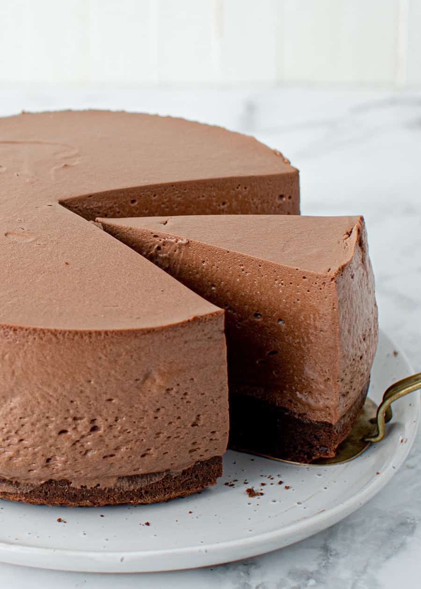

Chocolate mousse

Description
I make this recipe for the holidays. It is the only pie that is gone at the end of the night. I use high-quality
chocolate chips; they are easier to melt. You can use milk or semi sweet chips. You can use any ready made or
cooked pie crust.
Ingredients
- 21 chocolate sandwich cookies, crushed
- ¼ cup butter, softened
- 1 cup heavy cream
- 1 (12 ounce) package semisweet chocolate chips
- 1 teaspoon vanilla extract
- 1 pinch salt
- 2 cups heavy cream
- ¼ cup white sugar
- 1 cup heavy cream, chilled
Steps
- Preheat oven to 350 degrees F (175 degrees C). Generously grease a 9 inch springform pan with 2 3/4 inch
sides.
- In a medium bowl, mix together crushed cookies and softened butter or margarine. Press mixture evenly into
greased pan. Bake in preheated oven for 5 minutes, then allow to cool.
- Combine 1 cup cream, chocolate, vanilla extract, and salt, in the top of a double boiler. Heat until
chocolate is fully melted and mixture is smooth. Alternatively, if you have a food processor, you can blend
mixture by placing chocolate, vanilla extract, and salt, in processor bowl. Bring 1 cup cream to a boil on
stovetop, then slowly pour cream into processor with blade running. Continue to process until mixture is
smooth.
- Pour chocolate mixture into a bowl and cool to room temperature, stirring occasionally.
- In a large bowl, beat 2 cups chilled cream with 1/4 cup sugar. Beat until stiff peaks form. Fold whipped
cream into chocolate mixture. Pour mixture into cooled crust.
- Chill pie at least 6 hours before serving. Prior to serving, beat remaining 1 cup cream with 1/4 cup sugar.
Beat until stiff, then pipe onto top of pie with a star tip, or place a spoonful on top of each slice.